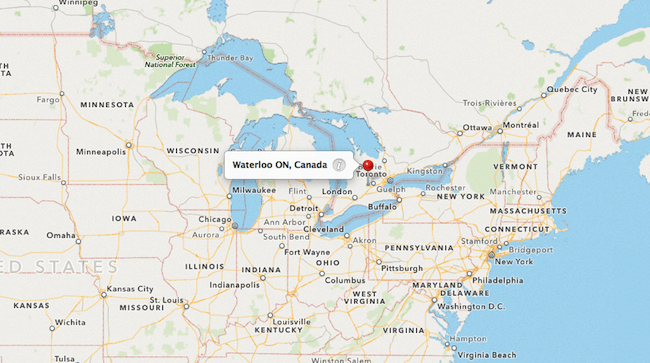

March 25, 2014

From Staff.Tumblr:
The smile of a loved one. Your childhood blanket. A handsome bodyguard to take you in his arms. “Security” can mean a lot of things in this crazy life, but nothing says “security” like Tumblr’s two-factor authentication. It’s available as an option in your Settings page as of right now.
You know how you need two keys to launch a nuclear missile? Two-factor authentication works like that. One key is your password, the other key is your cellular phone, and you need both to access your Tumblr Dashboard.
Read more →
March 25, 2014


I imagine you have an email account. Possibly several. You’ve probably forgotten how many social media accounts you have. Might even have a few websites. That’s pretty common. Over a third of the world’s population is online these days.
But do you consider yourself a website? A web property? A network? Probably not. But that could change. Might be already. Our world is becoming ever more connected and networked, and the idea of people, tech, and the Internet itself all being separate entities is becoming an increasingly archaic one.
Data we create online isn’t just about our emailing and browsing habits anymore. It’s not even just about computers or mobile phones. Our digital systems can include our cars, our appliances, and things we wear. All of these things are becoming more connected.
Read more →
March 24, 2014


The 49th ICANN meeting officially started today and the community is back in Singapore where internet history was made when new generic top-level domains (gTLDs) were approved in 2011. Coincidentally, Singapore was also the location of the first ever ICANN conference in 1999 so there couldn’t be a better place to get together again now that new gTLDs are a reality.
Read more →
March 20, 2014

Technically, as of writing this post, the internet is sitting with 294,066 new gTLDs. And considering the first TLDs only started being offered for general availability in early February, the public reception has been quite nice.
But it’s not the steady growth that shocks me the most—it’s the top of the list of TLDs that are doing best. Here’s the current top 10 (from ntldstats.com):
Read more →
March 18, 2014
IDN’s, or Internationalized Domain Names, are probably going to change the internet. No, they will change the internet—it’s just hard to tell how much.
Without doing any sort of in-depth usability study, it’s easy to see why domains using international characters would be popular in foreign countries. The internet is supposed to be for us all, but it’s currently dominated by the latin alphabet.
Read more →
March 18, 2014

This week is a big one for the gTLD rollout, with a massive eight new domain extensions to choose from: .ACADEMY, .BERLIN, .CENTER, .COMPANY, .COMPUTER, .MANAGEMENT, .SYSTEMS and .UNO.
Read more →
March 18, 2014
Selecting the right tools is extra important for small companies. We feel the impact of having to use something that just doesn’t quite work much more quickly and widely given that it affects a larger percentage of the workforce.
Conveniently, though, it’s also easier for small teams and individuals to try out various tools, adopting, tweaking and discarding until we find the right fit. This is not so much the case with “enterprise solutions”.
We really enjoyed this behind-the-scenes piece from Bobby Grace at Fog Creek on How We Make Trello. Trello is one of our favorite tools for project management.
Read more →
March 14, 2014

First, some math. A good portion of our business comes from good-ol’ North America, which creates a huge problem for us—timely time-zone support coverage. In short, we’re in NZDT (UTC+13), while New York is in EST (UTC-5). 13—(+)5=18.
So when the North American East coast is looking to get their day started around 9am, it’s still 3am in Wellington. And by the time “the tireds” have worn off (around 11am), much of the North American east coast is packing up to go home.
Basically, for us to hire a “Support Scholar,” we had to find an agile, patient, independent, funny, intelligent master of clearly crafting the English language—who lives in North America.
Meet Melanie.
Read more →
March 13, 2014
The web is 25 today. A big birthday indeed—but what do you get a good friend who has everything? Cake? A Mistobox coffee membership?
After a bit of thought, we decided to pool together all of our favorite websites to create a “best of” list. Some sites are new, some are considered old, but all have played a part in making the internet what it is today.
Read more →
March 13, 2014
{{ template “vimeo” “88343326” }}
Read more →
Older posts